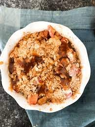

Apple Crisp
Ingredients
- 1 Apple
- 1/4 cup oats
- 1 tablespoon cinnamon
- 1 tablespoon sugar
- 2 tablespoons butter
- 3 tablespoons maple syrup or honey
- 1 cup vanilla ice cream
- Fresh Basil
Directions
- Preheat air fryer to 350°F for 5 minutes
- Cut apple in half through the core. Spoon out the hard core of the apple
- Put butter in a bowl then into microwave and heat 10-15 seconds to melt
- Add oats, cinnamon, sugar, maple syrup or honey into bowl with melted butter, mixing thoroughly
- Put mixture into center of the apple of the spooned out core
- Spray air fryer basket with non-stick cooking spray and place apples halves in basket
- Set air fryer to 350°F and let apple cook for about 14 minutes
- Remove apples from basket into a bowl and top with vanilla ice cream. Enjoy!